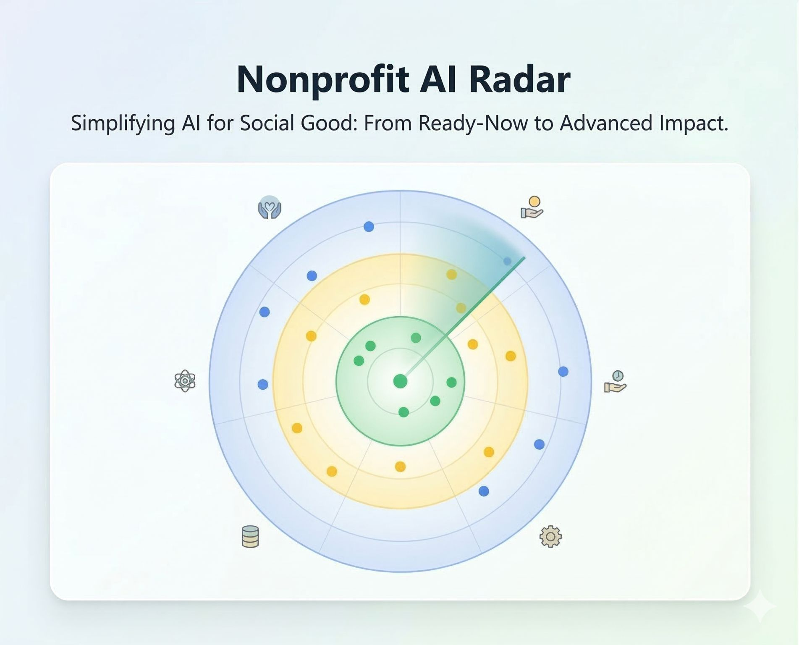

One of the hardest parts of working with AI isn't learning to use it. It's figuring out what to use it for.
Most organizations are stuck on exactly this. Nonprofit leaders, business operators, executive directors. They know AI is valuable. What they can't see clearly is where it applies to work like theirs, and how to tell the difference between something genuinely useful and something that just looks impressive.

The organizations making real progress aren't necessarily the most technically sophisticated. They're the ones who've been exposed to enough concrete examples to recognize a fit when they see one. Inspiration before implementation.
I run into this myself. Nathaniel Whittemore described a use case radar he built for businesses on The AI Daily Brief. I hadn't considered building something like that until I heard it. Five minutes later I was sketching out a nonprofit version and building it in Claude Code. That's how idea generation actually works: borrowed, adapted, made relevant to your context.
So I built the Nonprofit AI Use Case Radar. Not a how-to guide, but a possibility surface. A place where nonprofit leaders can see what organizations like theirs are actually doing with AI, scored by how achievable it is, organized well enough to browse without a technical background.
Where do you look when you're trying to figure out what's worth trying next?